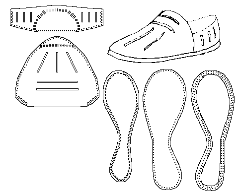

Mary Rose shoe (1549)
This is most probably a welted hoe. It has an inner sole, and a thicker, heavier sole. Based on Material
found in
Rule.
Return to
[Index] or
[Next]
Footwear of the Middle Ages - Historical Shoe Designs/Number 39, by I. Marc Carlson. Copyright 1996
This page is given for the free exchange of information, provided the Author's Name is included in all future revisions, and no money change hands, other than as expressed in the Copyright Page.